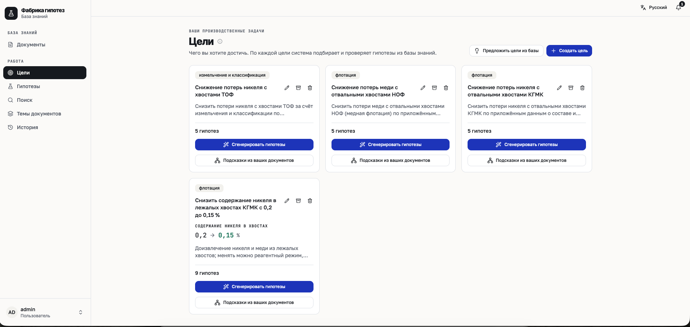
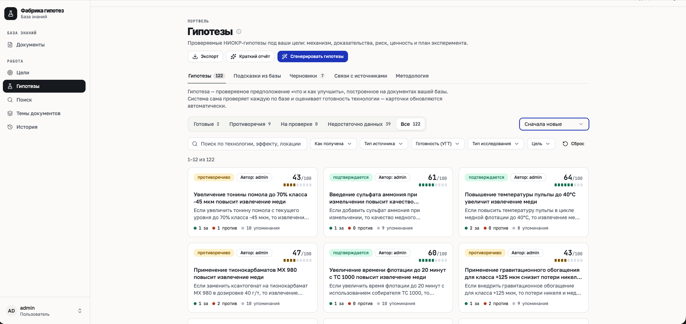
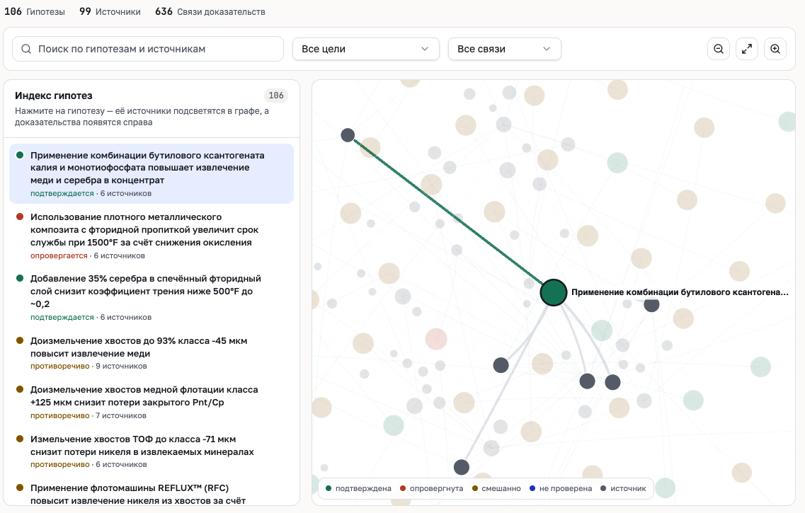
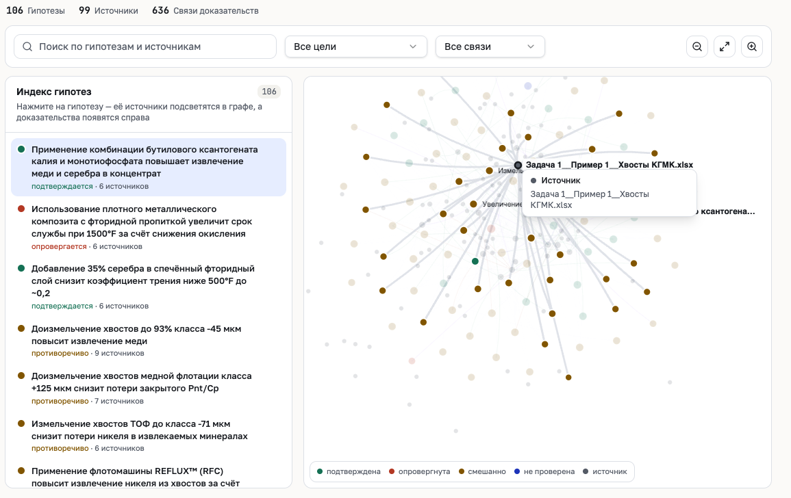
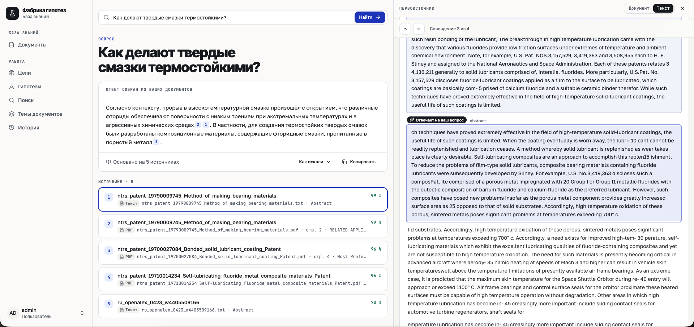
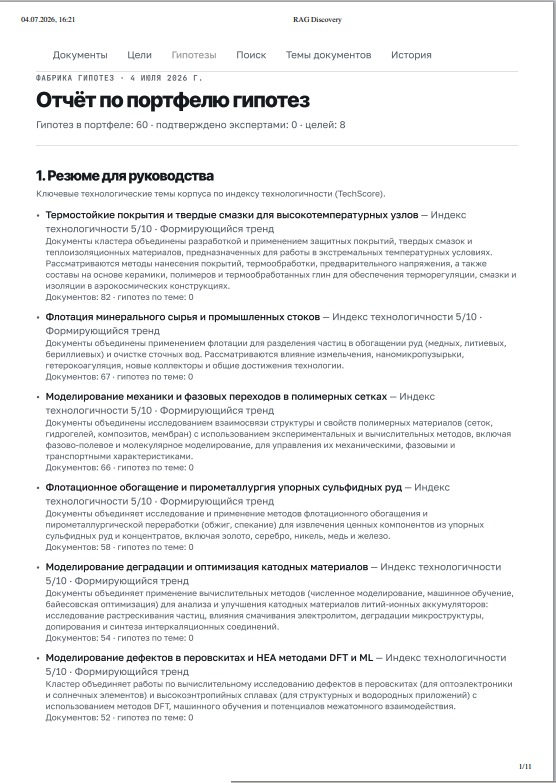

Роман
Senior · 3 года
Head of AI, scid.ai. NLP Engineer в R&D отделе. ML/RAG-архитектура и продуктовый контур.
Senior · 3 года
Head of AI, scid.ai. NLP Engineer в R&D отделе. ML/RAG-архитектура и продуктовый контур.
Senior · 3 года
CV Engineer в R&D отделе. Computer Vision, Data Science и оценка гипотез по данным.
Principal · 7 лет
PhD, Principal ML Engineer в R&D отделе. Backend, архитектура, интеграции и стабильность демо.
уходит на формулировку, согласование и первичную проверку исследовательского направления.
отчёты и результаты экспериментов остаются неструктурированными и не генерируют новые идеи.
ключевых эксперта часто определяют повестку вручную, снижая воспроизводимость отбора.
нет общего формата сравнения по новизне, рискам, ресурсам и ожидаемой бизнес-ценности.

Технолог вводит KPI: например, повысить извлечение меди. Система читает внутренние отчёты, таблицы, статьи и патенты. Через десятки секунд выдаёт карточки гипотез: что проверить, почему это может сработать, какие источники за и против, какой риск и какой план эксперимента. Эксперт выбирает, правит и запускает проверки.



Извлечение происходит под выполнение конкретной цели: карточки появляются за 36,4 с медиана. Каждая идея связывается с KPI, а система определяет, подтверждает или опровергает источник гипотезу, и сохраняет контекст для следующего эксперимента.
В одной теме есть материал или процесс. В другой — нужное свойство или цель. Система ищет связующее звено и превращает такой стык в проверяемую гипотезу.
Ищем пары тем, которые похожи по смыслу, но почти не связаны напрямую. Именно там часто появляется новая идея.
Подбираем документ, метод, материал или механизм, который объясняет, почему две темы можно соединить.
Из найденной связи собираем простое утверждение: что изменить, в каком объекте и какой эффект ожидать.
Оставляем только идеи с реальными источниками, признаками новизны и без повторов уже известных решений.

Поиск происходит не только в документах предприятия: система формирует научный запрос к открытым источникам, находит похожие статьи и патенты и помогает оценить мировую новизну гипотезы. DOI-ссылки ведут к первоисточнику, чтобы эксперт мог быстро проверить доказательную базу.

Эмбеддинги, OCR, реранкер и хранение работают локально; генерацию можно перевести на локальный LLM и отключить внешние публикации.
JWT, роли и проверка owner_id ограничивают данные, а история, источники и trace показывают, кто что запросил и на чем основан ответ.
Прикладные и ML-компоненты разделены по зонам ответственности: загрузка данных, поиск, граф, генерация, хранение и наблюдаемость.
REST/WS, gRPC и RabbitMQ разделяют online-запросы и ingest; парсеры, OCR, воркеры и GPU-бэкенды масштабируются независимо.
Раскладывать идеи на материал, процесс, режим, условие, эффект и свойство; показывать, что изменится при замене состава или режима.
Собирать план проверки гипотезы из этапов, ресурсов, сроков, ответственных и критериев успеха для перехода к эксперименту.
Разделять сигналы одобрения, правок, отклонений, запусков экспериментов и экспорта, чтобы реранкер точнее подстраивался под оператора.
Довести SSO/MFA, Vault/KMS, immutable audit, SIEM, TLS/mTLS, DLP и политики внешних вызовов до требований промышленной эксплуатации.
Мы уже разработали продукт, который упрощает скаутинг технологий, мониторинг технологических трендов и генерацию технологических гипотез для 10+ наукоёмких компаний.
Готовы предоставить сервис, который закроет эту потребность и в Норникеле.
| Эмбеддинг | 38 мс p50, 49 мс p95 |
| Qdrant | 5 мс p50, 10 мс p95 |
| BM25 / OpenSearch | 10 мс p50, 24 мс p95 |
| Реранкинг | 3,8 с p50, 4,9 с p95 |
| Генерация | 36,4 с медиана, 154,2 с максимум |
| Автопроверка | 12,4 с медиана, 33,3 с максимум |
| Дополнение | 18,7 с медиана, 85 с максимум |
| УГТ / конкуренты | 7,7 с / 3,6 с медиана |
| Демо-сессия | порядок 10³ LLM-запросов |
| Недельный прогон | порядок 10⁷ токенов |
| Стоимость | сотни ₽ при малой демо-нагрузке |
| OpenRouter | usage API для фактического расхода |
| Yandex AI Studio | расчёт по прайсу за 1 млн токенов |
| Локальный LLM | без token billing, расход в GPU-часах |
| 1 гипотеза | 1–3 запроса и тысячи токенов |
| Стоимость | копейки–десятки копеек на гипотезу |
| База расчёта | пересчитывается по текущему `llm_usage` |
| Нагрузка | generate → verify → enrich → assess_trl |
| Запуск | Docker 24+ и Compose v2 |
| GPU-стек | ~7 ГБ VRAM для embeddings, rerank и OCR |
| Локальный LLM | добавляет ~3–19 ГБ VRAM по модели |
| Диск | ~25 ГБ на образы и веса моделей |
Шаблон для пересъёма: заполните таблицу из `/admin/perf` и `/admin/llm-usage` на целевом контуре. Значения на слайде иллюстративные; для времени показывайте p50 / p95 или медиану / максимум, для денег — usage API провайдера или расчёт по утверждённому прайсу.